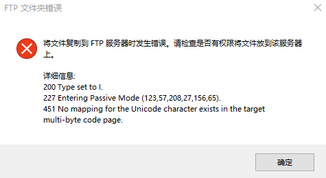

更新网站报错图文经验部分笔记
1.mtsoftware.cn上传ftp提示:无法与服务器建立链接(无法访问）
经验：第二天就可以正常访问了。（多次都是这个结果，第二天就能正常访问了）
当天多个时间进行访问测试，都无效，都是第二天就可以访问了，估计和服务器或服务器连接本身有关。
先更新另一个网站，这个网站第二天再更新，为确保一致，更新日期都和另一个网站统一一个日期。
2.lodop.net.cn上传ftp提示：XXXXx Access is denied.（权限报错的一种）
经验：1.等一段时间后再上传试试。2.待补充，
时间太久，忘了当时的解决情景，一般都是等一段时间。
3.上传ftp提示：No mapping for the Unicode character XXXX.（权限报错的一种）

经验：1.去掉压缩包里的中文名。
发现是压缩包的名字里有中文，去掉中文就可以了。
4.上传ftp提示：XXXXXConnection closed;transfer aborted.（权限报错的一种）
经验：1.删除一些旧文件，腾出空间，再复制新的文件
具体测试步骤可查看下方相关链接，后来发现上传一个小txt可以，觉得和空间有关，删除旧的安装包等文件，就可以复制上新的了，复制不上，以后就首先测试删除部分旧文件了，（为了以防万一，旧文件在D盘建了个文件夹，专门放删除的旧文件，防止以后可能用到）
网上解决方法，有时也无效：打开“Internet选项”，选择“高级”选项卡，在设置中把“使用被动FTP（用于防火墙和DSL调制解调器的兼容）”前面的勾去掉，并点击“确定”退出“Internet属性”。
相关链接（该链接会跳转cnblog里的博文）：拷贝文件到服务器 提示FTP文件夹错误
5.上传ftp提示：XXXXX与服务器的连接被重置.（权限报错的一种）
经验：1.删除一些旧文件，腾出空间，再复制新的文件，2.批量复制不上，可逐部分复制，如5个页面为一组，一组一组的往里复制。
（1）用重新登录下试试，刷新下页面。
（2）刷新下页面。
（3）如果是批量更新，逐个或逐几个文件复制上。
（4）删除旧的不需要的文件，再复制上试试。（同3中问题有时也会是这个报错）
PS：连接被重置比较常出现，有时候也是过段时间就好了。有时候复制多次，尝试多次，会有其他提示出现。
一组一组往里复制，具体一组几个可实际测试，如果一次复制20个进去报错，可以尝试复制10个，10个也报错，可尝试复制5个进去。
奇怪情况：某个网站的某个文件夹（demolist里的提示下载安装文件更新时）下报错提示这个复制不上，该网站其他文件夹均正常。难道是有客户正在使用下载，第二天早上就好了。解决方法：第二天早上再更新。